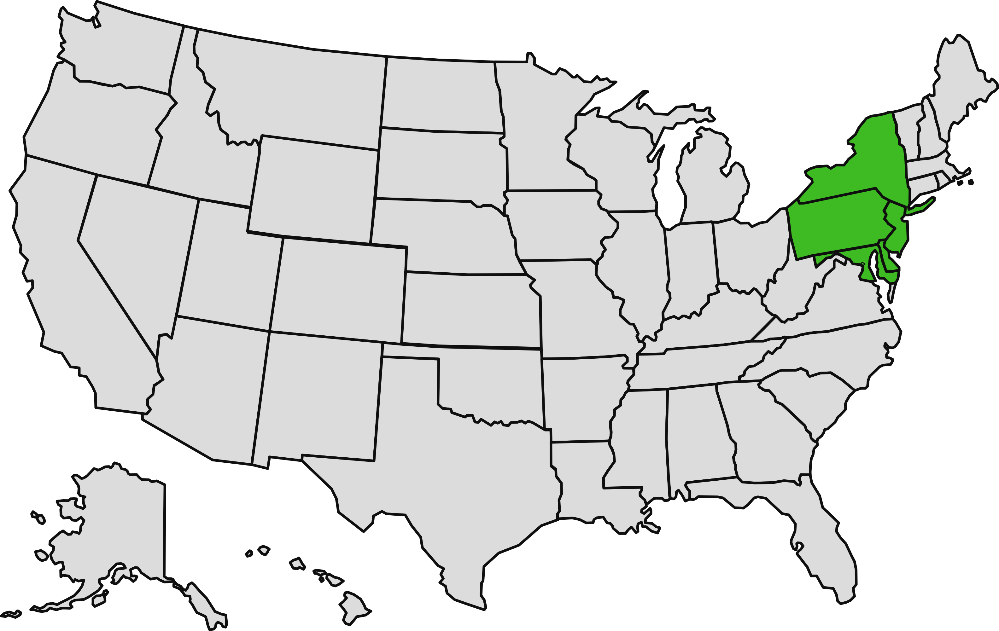
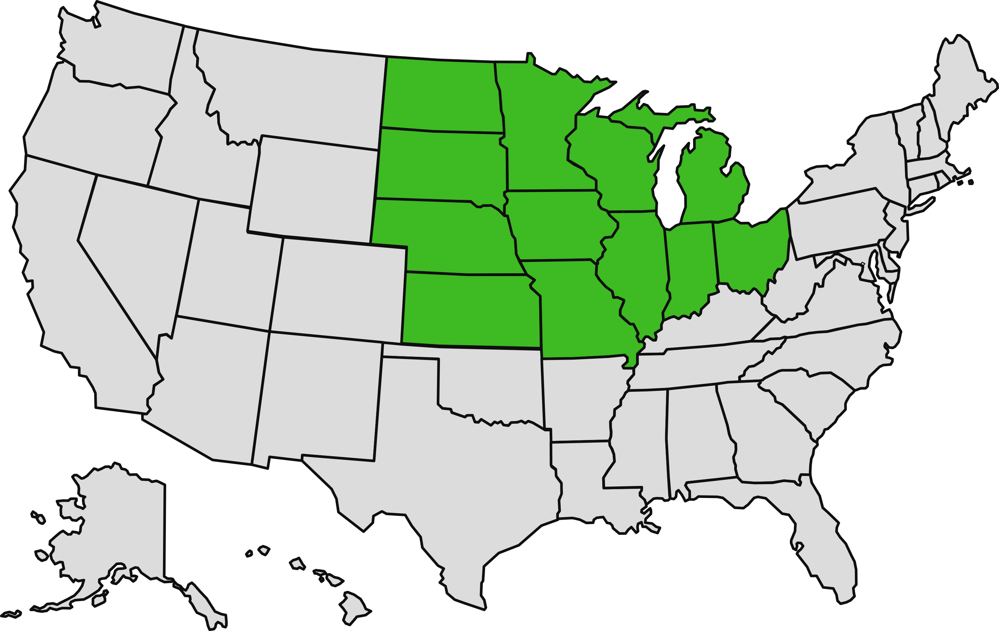
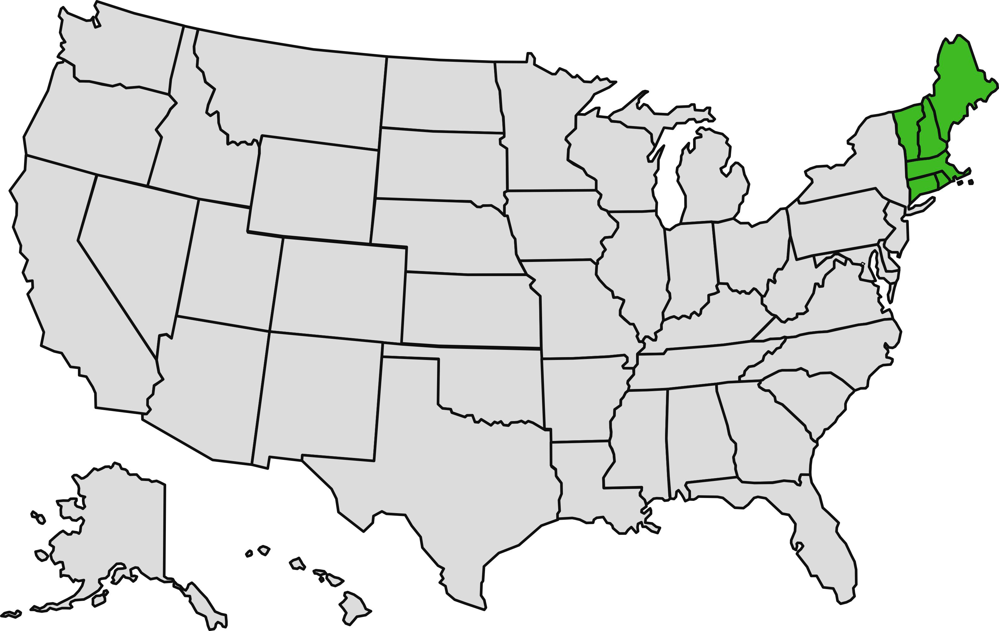
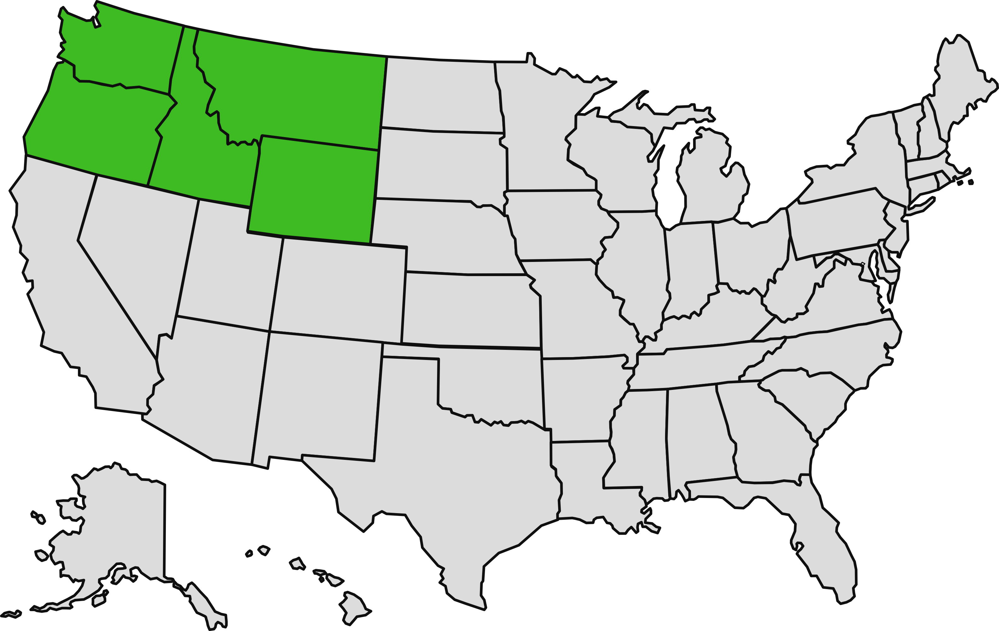
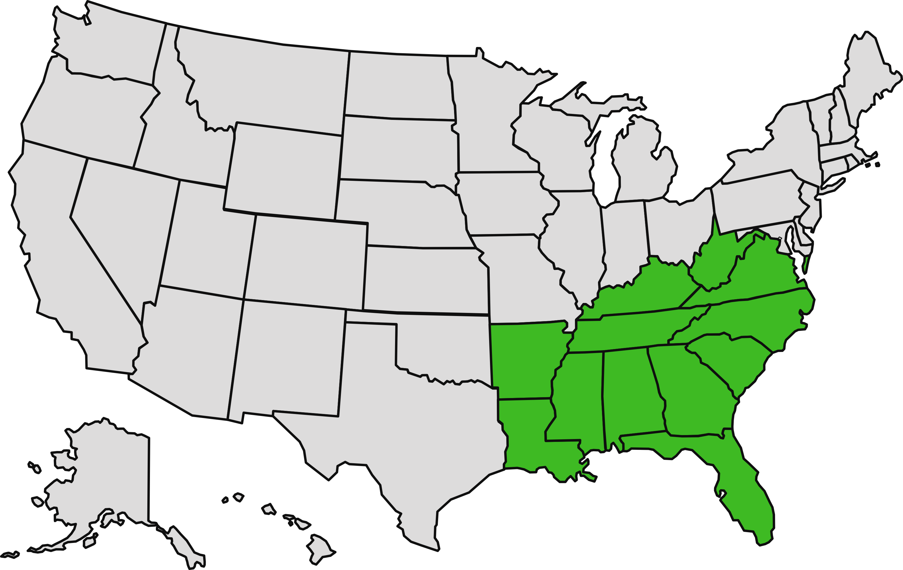
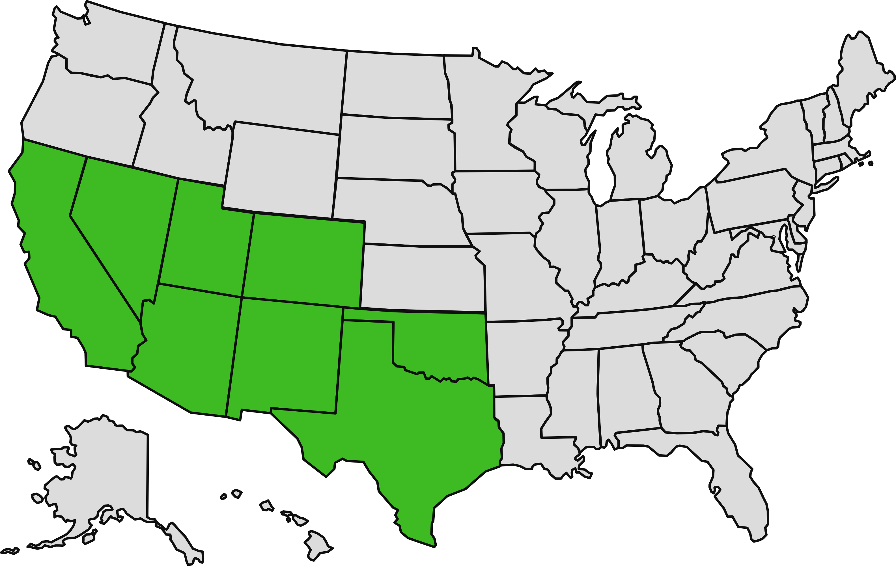
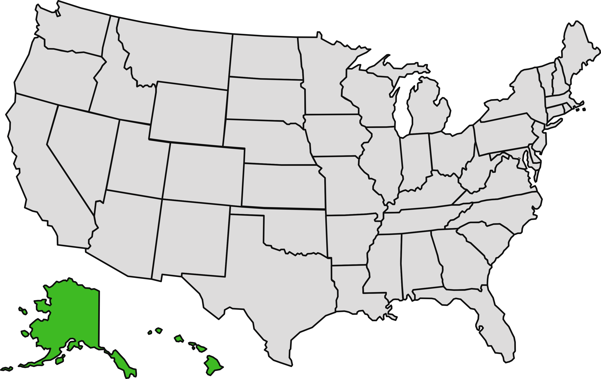

Did you know...
An interior decorator is not an interior designer.
- BLS. Occupational Outlook Handbook: Interior Designers. U.S. Bureau of Labor Statistics (2025). Available at: https://www.bls.gov/ooh/arts-and-design/interior-designers.htm (Accessed 27 September 2025).
- CIDQ. Definition of Interior Design. Council for Interior Design Qualification (2025). Available at: https://www.cidq.org/about-cidq (Accessed 27 September 2025).
- Wolfe, Debbie. Interior Designer vs. Interior Decorator: What's the Difference?. Nasdaq, 12 April 2021. https://www.nasdaq.com/articles/interior-designer-vs.-interior-decorator:-whats-the-difference-2021-04-12 (Accessed 27 September 2025).
Interior designers are technical, educated, and credentialed professionals who create safe, functional, and accessible interiors.
- BLS. Occupational Outlook Handbook: Interior Designers. U.S. Bureau of Labor Statistics (2025). Available at: https://www.bls.gov/ooh/arts-and-design/interior-designers.htm (Accessed 27 September 2025).
- CIDQ. Definition of Interior Design. Council for Interior Design Qualification (2025). Available at: https://www.cidq.org/about-cidq. (Accessed 27 September 2025).
- Wolfe, Debbie. Interior Designer vs. Interior Decorator: What's the Difference?. Nasdaq, 12 April 2021. https://www.nasdaq.com/articles/interior-designer-vs.-interior-decorator:-whats-the-difference-2021-04-12 (Accessed 27 September 2025).
Interior decorating is often more a hobby than a job and focuses on aesthetics.
- Wolfe, Debbie. Interior Designer vs. Interior Decorator: What's the Difference?. Nasdaq, 12 April 2021. https://www.nasdaq.com/articles/interior-designer-vs.-interior-decorator:-whats-the-difference-2021-04-12 (Accessed 27 September 2025).
The regulation of the title "Interior Designer" is considered unconstitutional under the First Amendment.
- FindLaw. Eva Locke v. Joyce Shore. FindLaw (2011). Available at: https://caselaw.findlaw.com/court/us-11th-circuit/1557399.html (Accessed 27 September 2025).
- Institute for Justice. Texas Interior Design: Challenging Texas' Licensing of Speech for Interior Designers. Institute for Justice (2007). Available at: https://ij.org/case/byrum-et-al-v-landreth-et-al-2/ (Accessed 27 September 2025).
- Institute for Justice. Connecticut Interior Design: Challenging Connecticut's Licensing of Speech for Interior Designers. Institute for Justice (2008). Available at: https://ij.org/case/susan-roberts-v-jerry-farrell (Accessed 27 September 2025).
All states regulate architecture, and the title "Architect."
- NCARB. How to Earn Your Architectural License. NCARB (2025). Available at: https://www.ncarb.org/become-architect/earn-license (Accessed 27 September 2025).
- NCARB. Licensing Requirements Tool. NCARB (2025). Available at: https://www.ncarb.org/get-licensed/licensing-requirements-tool (Accessed 27 September 2025).
In most states, an interior architecture degree does not allow use of the title "Interior Architect."
- CIDA. Accredited Programs. Council for Interior Design Accreditation (2025). Available at: https://cida.org/accredited-programs (Accessed 27 September 2025).
- NCARB. Architectural Education: What Degree You Need to Become Licensed. NCARB (2025). Available at: https://www.ncarb.org/earn-a-degree/study-architecture (Accessed 27 September 2025).
Many states reserve the use of the titles “architectural designer” and "design professional" for registered architects.
- NCARB Staff. Update on the Intern Title Discussion. NCARB, 16 May 2017 https://www.ncarb.org/blog/update-the-intern-title-discussion (Accessed 27 September 2025).
- Pacheco, Antonio. Unlicensed? Don't call yourself an "Architectural Designer" or "Design Professional". Archinect, 23 Nov. 2019. https://archinect.com/news/article/150171751/unlicensed-don-t-call-yourself-an-architectural-designer-or-design-professional (Accessed 27 September 2025).
- Young Architect. Becoming an Architect: What You'll Need to Know. Young Architect (2025). Available at: https://youngarchitect.com/becoming-an-architect (Accessed 27 September 2025).
Only 36% of universities with accredited architecture degree programs also have an accredited interior design program.
- CIDA. Accredited Programs. Council for Interior Design Accreditation (2025). Available at: https://cida.org/accredited-programs (Accessed 27 September 2025).
- NAAB. NAAB-Accredited Architectural Programs in the United States. National Architectural Accrediting Board (2024). Available at: https://higherlogicdownload.s3.amazonaws.com/NAAB/21e8eae7-e532-47c0-bff1-4111ca0d4fb0/UploadedImages/PDFs/Accredited_NAAB_Programs_09112024.pdf (Accessed 27 September 2025).
- NAAB. Accredited Programs. NAAB (2025). Available at: https://www.naab.org/accreditation/accredited-programs (Accessed 27 September 2025).
The exam for interior designers is a 3-part, 11 hour exam covering interiors regulations. Interior design education and 2 years of work experience are required.
- CIDQ. NCIDQ Examination Eligibility Pathways. Council for Interior Design Qualification (2025). Available at: https://www.cidq.org/paths (Accessed 27 September 2025).
- CIDQ. NCIDQ Examination: 3 Exam Sections. Council for Interior Design Qualification (2025). Available at: https://www.cidq.org/exams (Accessed 27 September 2025).
- CIDQ. What is NCIDQ Interior Design Certification?. Council for Interior Design Qualification (2025). Available at: https://www.cidq.org (Accessed 27 September 2025).
The exam for architects is a 6-part, 20 hour exam covering a range of regulations. 2 years of work experience is required. Educational requirements vary.
- NCARB. ARE 5.0 Format. NCARB (2025). Available at: https://www.ncarb.org/pass-the-are/prepare/are-5-0-format (Accessed 27 September 2025).
- NCARB. Experience Requirements. NCARB (2025). Available at: https://www.ncarb.org/gain-axp-experience/experience-requirements (Accessed 27 September 2025).
There are over 38,000 active NCIDQ certificate holders, most of whom are women.
- DATAUSA. Interior Designers. DATAUSA (2022) Available at: https://datausa.io/profile/soc/interior-designers (Accessed 27 September 2025).
- CIDQ. NCIDQ Certification. Council for Interior Design Qualification (2025). Available at: https://www.cidq.org/certified-interior-designers (Accessed 27 September 2025).
There are over 120,000 licensed architects, most of whom are men.
- NCARB. Demographics NBTN 2024. NCARB (2024). Available at: https://www.ncarb.org/nbtn2024/demographics (Accessed 27 September 2025).
- NCARB. Number of Architects Increased in 2023. NCARB, 05 June 2024. Available at: https://www.ncarb.org/press/number-of-architects-increased-2023 (Accessed 27 September 2025).
Most interior designers are required to pay an architect or an engineer to stamp and sign their drawings.
- CIDQ. Legislative Map. Council for Interior Design Qualification (2025). Available at: https://www.cidq.org/regulated-jurisdictions (Accessed 27 September 2025).
From 1995 to 2021, the AIA openly opposed interior design legislation.
- Bernstein, Fred A. Architects and Interior Designers Battle Over Turf. Architectural Record, 22 Nov. 2021. https://www.architecturalrecord.com/articles/15405-architects-and-interior-designers-battle-over-turf (Accessed 27 September 2025).
- CIDQ. AIA Revises Interior Design Opposition Position Statement. Council for Interior Design Qualification, 18 Jan. 2022. Available at: https://www.cidq.org/advocacy-bulletin (Accessed 27 September 2025).
ASID and IIDA, leading interior design organizations, offer the top-tier membership to both NCIDQ designers and licensed architects.
- ASID. Become A Practitioner Member with ASID. ASID (2025). Available at: https://www.asid.org/belong/practitioner (Accessed 27 September 2025).
- IIDA. Professional Membership. IIDA (2025). Available at: https://iida.org/memberships/professional (Accessed 27 September 2025).
AIA, the most well-known organization for architects, offers the top-tier membership to licensed architects only.
- AIA. Become an AIA Member. AIA (2025). Available at: https://www.aia.org/membership (Accessed 27 September 2025).
There is growing support for "reasonable" regulation, meaning no restriction on the title "interior designer" or practicing "interior design.”
- ASID. The Importance of Interior Design. ASID (2025). Available at: https://www.asid.org/lib24watch/files/pdf/8572 (Accessed 27 September 2025).
- CIDQ. Advocacy. Council for Interior Design Qualification (2025). Available at: https://www.cidq.org/advocacy (Accessed 27 September 2025).
- Consortium for Interior Design. The Consortium for Interior Design (2025). Available at: https://consortiumforinteriordesign.splashthat.com/ (Accessed 27 September 2025).
- IIDA. Advocacy: About. IIDA (2025). Available at: https://iida.org/advocacy (Accessed 27 September 2025).
Interior design has been stolen.
(and no, it's not ai.)
Learn the facts.
Hire accordingly.
Support equal regulation.
Save the interior design profession.
Meet Scrib - GTM's mascot. Scrib is a fictional animal character that looks similar to a monkey in detective clothing. Scrib first pops out on the right side of the screen with a magnifying glass then disappears off screen. Scrib then jumps into view and introduces itself as the Green Tape Measure's fact checker. Scrib then has a thought bubble that says: Reasonable regulation? Sounds like deregulation.
TM
About
Research and analyze. Educate stakeholders. Advance the industry.
The Green Tape Measure (GTM) is a research organization dedicated to improving work environments and expanding job opportunities for qualified interior designers in the United States while also protecting the health, safety, and welfare (HSW) of the public.
GTM believes that aligning public perception with facts will increase support for regulation and achieve our mission.
is a stakeholder.
- If you are a client, you have the right to clearly know who to hire for a job. Hiring an unqualified designer could in the best case cost money, and in the worse case, create an unsafe environment for occupants.
- For designers, there is a common goal: to achieve clients’ objectives while also protecting their HSW. This means involving a qualified interior designer in every aspect of an interiors project, not just for furniture selection.
Quiz
-
Use the arrow buttons to see the next or previous definition.
-
Drag a job title to where it says “place job title here”.
Screen reader users: use the dropdown menus under each definition.
Definitions
A licensed architect who practices interior design.
place job title here
Designs interiors that are safe and functional. Education and certification are common but not legally required.
place job title here
Designs buildings. Requires a license.
place job title here
Furnishes a space with fashionable or attractive items. No education or experience is needed.
place job title here
Terms

- BLS. Occupational Outlook Handbook: Architects. U.S. Bureau of Labor Statistics (2025). Available at: https://www.bls.gov/ooh/architecture-and-engineering/architects.htm (Accessed 27 September 2025).
- BLS. Occupational Outlook Handbook: Interior Designers. U.S. Bureau of Labor Statistics (2025). Available at: https://www.bls.gov/ooh/arts-and-design/interior-designers.htm (Accessed 27 September 2025).
- CCIDC. Why is it Illegal to Use the Title "Interior Architect". CCIDC (2025). Available at: https://ccidc.org/using-the-title-interior-architect-is-illegal (Accessed 27 September 2025).
- CIDQ. The Professional Difference Between "Interior Designer" and "Interior Decorator". Council for Interior Design Qualification (2025). Available at: https://www.cidq.org/why-ncidq-certification-matters (Accessed 27 September 2025).
- Darbandi, Maryam et al. The Emergence of Interior Architecture. ResearchGate, July 2023. https://www.researchgate.net/publication/372914515_The_Emergence_of_Interior_Architecture (Accessed 27 September 2025).
- NCARB. Why Architecture. NCARB (2025). Available at: https://www.ncarb.org/become-architect/why-architecture (Accessed 27 September 2025).
- Reddit. What exactly does an interior architect do (vs just architect). Reddit (2025). Available at: https://www.reddit.com/r/architecture/comments/1i4zs5t/what_exactly_does_an_interior_architect_do_vs/?rdt=52989 (Accessed 27 September 2025).
- Wolfe, Debbie. Interior Designer vs. Interior Decorator: What's the Difference?. Nasdaq, 12 April 2021. Available at: https://www.nasdaq.com/articles/interior-designer-vs.-interior-decorator:-whats-the-difference-2021-04-12 (Accessed 27 September 2025).
Timeline
Click an arrow button to see a date, then click the tape measure to see more information.
sound is on
1857
1897
1903
1911
1919
1931
1940
1957
1970
1974
1975
1980
1982
1987
1989
1994
1999
2003
2009
2013
2017
2021
2023
today
- NCARB. The Need for Regulation: The Rise of Professions. NCARB (2025). Available at: https://centennial.ncarb.org/beginning-of-licensure (Accessed 27 September 2025).
- NCARB. The Need for Regulation: The First License Law. NCARB (2025). Available at: https://centennial.ncarb.org/beginning-of-licensure (Accessed 27 September 2025).
- Massasoit Community College. Major American Fires: Iroquois Theater Fire - 1903. Massasoit Community College (2017). Available at: https://library.massasoit.edu/americanfires/iroquois (Accessed 27 September 2025).
- Uenuma, Francine. The Iroquois Theater Disaster Killed Hundreds and Changed Fire Safety Forever. Smithsonian Magazine, 12 June 2018. Available at: https://www.smithsonianmag.com/history/how-theater-blaze-killed-hundreds-forever-changed-way-we-approach-fire-safety-180969315/ (Accessed 27 September 2025).
- AFL-CIO. Triangle Shirtwaist Fire. AFL-CIO (2025). Available at: https://aflcio.org/about/history/labor-history-events/triangle-shirtwaist-fire (Accessed 27 September 2025).
- History.com Editors. Triangle Shirtwaist Factory Fire. History.com, 2 Dec. 2009. Available at: https://www.history.com/articles/triangle-shirtwaist-fire (Accessed 27 September 2025).
- NCARB. History of NCARB. NCARB (2025). Available at: https://www.ncarb.org/about/history-ncarb (Accessed 27 September 2025).
- ASID. A History of the American Society of Interior Designers. ASID (2025). Available at: https://www.asid.org/50years (Accessed 27 September 2025).
- NAAB. Our History: Why Accreditation?. NAAB (2025). Available at: https://www.naab.org/who-we-are/our-history (Accessed 27 September 2025).
- ASID. A History of the American Society of Interior Designers. ASID (2025). Available at: https://www.asid.org/50years (Accessed 27 September 2025).
- CIDA. Our Story. Council for Interior Design Accreditation (2025). Available at: https://cida.org/cida-history (Accessed 27 September 2025).
- CIDQ. 50th Anniversary. Council for Interior Design Qualification (2025). Available at: https://www.cidq.org/50th-anniversary (Accessed 27 September 2025).
- ASID. A History of the American Society of Interior Designers. ASID (2025). Available at: https://www.asid.org/50years (Accessed 27 September 2025).
- Best, Richard, and Demers, David P. Investigation Report on the MGM Grand Hotel Fire. National Fire Protection Association, 15 Jan. 1982. https://www.firefighternation.com/wp-content/uploads/2016/11/lasvegasmgmgrand.pdf (Accessed 27 September 2025).
- Jensen Hughes. How the MGM Grand Fire Changed Fire Codes + Standards. Jensen Hughes 19 Nov. 2021. Available at: https://www.jensenhughes.com/insights/how-the-mgm-grand-fire-changed-fire-codes-standards (Accessed 27 September 2025).
- IIDA Alabama Chapter. Advocacy & Legislation. IIDA Alabama Chapter (2025). Available at: https://www.iida-al.org/resources/advocacy-legislation (Accessed 27 September 2025).
- Gillman, Todd J. Architects Fight D.C. Law Licensing Interior Designers. The Washington Post, 23 Aug. 1987. https://www.washingtonpost.com/archive/business/1987/08/24/architects-fight-dc-law-licensing-interior-designers/b4afb5fa-aa7e-4b59-9536-3fd85ecd9963 (Accessed 27 September 2025).
- Whitney, Marilyn Corson. A History of the Professionalization of Interior Design. Virginia Tech VTechWorks, 18 Aug. 2008. https://vtechworks.lib.vt.edu/server/api/core/bitstreams/75802a53-f826-4e1b-9e44-1afa7c02bd4f/content#page=92 (Accessed 27 September 2025).
- IIDA. Our Story. IIDA (2025). Available at: https://iida.org/about/our-story (Accessed 27 September 2025).
- AIA Las Vegas. Interior Designers Abandon 1989 Accord. Forum, July 2000. Available at: https://usmodernist.org/AIANV/AIALV-1999-07.pdf#page=3 (Accessed 27 September 2025).
- FSRI. Remembering The Station Nightclub Fire: Twenty Years Later. UL Research Institutes, 20 Feb. 2023. Available at: https://fsri.org/news/remembering-station-nightclub-fire-twenty-years-later (Accessed 27 September 2025).
- NIST. Disaster & Failure Studies: The Station Nightclub Fire 2003. NIST 3 June 2011. Available at: https://www.nist.gov/disaster-failure-studies/station-nightclub-fire-2003 (Accessed 27 September 2025).
- Institute for Justice. Connecticut Interior Design: Challenging Connecticut's Licensing of Speech for Interior Designers. Institute for Justice (2008). Available at: https://ij.org/case/susan-roberts-v-jerry-farrell (Accessed 27 September 2025).
- Institute for Justice. Texas Interior Design: Challenging Texas' Licensing of Speech for Interior Designers. Institute for Justice (2007). Available at: https://ij.org/case/byrum-et-al-v-landreth-et-al-2/ (Accessed 27 September 2025).
- FindLaw. Eva Locke v. Joyce Shore. FindLaw (2011). Available at: https://caselaw.findlaw.com/court/us-11th-circuit/1557399.html (Accessed 27 September 2025).
- ASID FLS. Response to Interior Design Deregulation. American Society of Interior Designers: Florida South (2025). Available at: https://fls.asid.org/resources/advocacy/response-to-interior-design-deregulation (Accessed 27 September 2025).
- ASID. Frequently Asked Questions: Why is ASID including architects in its membership structure?. American Society of Interior Designers (2025). Available at: https://www.asid.org/frequently_asked_questions/frequently_asked_questions (Accessed 27 September 2025).
- Daly, Michael. Bronx Building's Oil-Based Paint Made it Burn Like 'Gasoline'. Daily Beast, 29 Dec. 2017. Available at: https://www.thedailybeast.com/bronx-buildings-oil-based-paint-made-it-burn-like-gasoline (Accessed 27 September 2025).
- Sullivan, C.J. 12 dead after fire sweeps through Bronx apartment building. New York Post, 28 Dec. 2017. Available at: https://nypost.com/2017/12/28/multiple-people-seriously-injured-as-fire-rips-through-bronx-building/ (Accessed 27 September 2025).
- Tobias, Michael. New Fire Safety Bills Passed by the NYC Council in May 2018: A Brief Overview. Nearby Engineers (2025). Available at: https://www.ny-engineers.com/blog/new-fire-safety-bills-passed-in-may-2018 (Accessed 27 September 2025).
- CIDQ. AIA Revises Interior Design Opposition Position Statement. Council for Interior Design Qualification, 18 Jan. 2022. Available at: https://www.cidq.org/advocacy-bulletin (Accessed 27 September 2025).
- ASID. ASID, CIDQ, and IIDA Announce Consortium for Interior Design: Advocating for Public Health, Safety, and Well-being. ASID, 29 Mar. 2023. Available at: https://www.asid.org/news/asid-cidq-and-iida-announce-consortium-for-interior-design-advocating-for-public-health-safety-and-well-being (Accessed 27 September 2025).
- ASID. The Importance of Interior Design. ASID (2025). Available at: https://www.asid.org/lib24watch/files/pdf/8572 (Accessed 27 September 2025).
- CIDQ. Advocacy. Council for Interior Design Qualification (2025). Available at: https://www.cidq.org/advocacy (Accessed 27 September 2025).
- IIDA. Advocacy: About. IIDA (2025). Available at: https://iida.org/advocacy (Accessed 27 September 2025).
- The Consortium for Interior Design (2025). Available at: https://consortiumforinteriordesign.splashthat.com/ (Accessed 27 September 2025).
- The Consortium for Interior Design. Working Together to Protect the Public. CIDQ (2025). Available at: https://www.cidq.org/_files/ugd/0784c1_0558650d7ba1424da5a7149e4e5c8869.pdf (Accessed 27 September 2025).
Analysis
Legend

Regulation of “Interior Designer”
Permitting Privileges: Laws allowing interior designers to stamp and sign their own drawings.
Restrictions, including:
- No changes to egress
- Architects must lead projects where designer requires more than 2 other professionals
- No increase in number of exits
- Projects must be under 5000 square feet
- No assembly spaces (such as theaters)
- Only Office or Retail projects
- No non-load-bearing walls that have casework (cabinets) or equipment (such as TVs)
Voluntary Registration: “Interior Designer” and “Interior Design” are not regulated.
Instructions:
- Select a region.
- Click a state to see information below.

Delaware
N/A - no regulation
N/A - no regulation
N/A - no regulation
N/A - no regulation
N/A - no regulation
N/A - no regulation
District of Columbia
1987, 2008, 2012, & 2020
Board of Architecture, Interior Design, & Landscape Architecture
Title & Practice Act with Permitting Privileges
NCIDQ
Maryland
1991, 2024
Title 8 & Title 09 Subchapter 18
State Board of Certified Interior Designers
Voluntary Title Act (Certified Interior Designer) with Permitting Privileges
NCIDQ
New Jersey
2002
Title 45:3 & Title 13 Chapter 27 Subchapter 9 (via LexisNexis®)
New Jersey State Board of Architects
Voluntary, Title (Certified Interior Designer)
NCIDQ
New York
1990, 2014
Title 8 Article 161, Part 52, & Subpart 79-3
New York State Board for Interior Design
Voluntary, Title (Certified Interior Designer)
As approved by board
Pennsylvania
2024
Pennsylvania Architects Licensure Board
Voluntary, Title (Certified Interior Designer)
As approved by board

Illinois
1993, 2023
225 ILCS 310 & Title 68 Chapter 7 Subchapter b Part 1255
Board of Registered Interior Designers
Voluntary, Title Act (Registered Interior Designer), Permitting Privileges
NCIDQ
No changes to egress beyond exit access
Indiana
2009, 2024
Indiana Professional Licensing Agency
Voluntary, Title Act (Registered Interior Designer)
NCIDQ
Iowa
2006, 2023, 2025
Chapter 544C & Iowa Administrative Code 193G
Iowa Interior Design Examining Board
Voluntary, Title Act (Registered Interior Designer), Permitting Privileges
NCIDQ
No changes to egress beyond exit access
Kansas
N/A - no regulation
N/A - no regulation
N/A - no regulation
N/A - no regulation
N/A - no regulation
N/A - no regulation
Michigan
N/A - no regulation (repealed in 2014)
N/A - no regulation
N/A - no regulation
N/A - no regulation
N/A - no regulation
N/A - no regulation
Minnesota
2008, 2024
Chapter 326, Chapter 1800, & Chapter 1805
Minnesota Board of Architecture, Engineering, Land Surveying, Landscape Architecture, Geoscience, and Interior Design
Voluntary, Title Act (Certified Interior Designer), Permitting Privileges
NCIDQ
Missouri
1998, 2004, 2008
Interior Design Council
Voluntary, Title Act (Registered Interior Designer)
NCIDQ
Nebraska
2025
Department of Treasury
Voluntary, Title (Registered Interior Designer), Permitting Privileges
NCIDQ
No change to egress beyond exit access. Also, see exemptions list.
North Dakota
N/A - no regulation
N/A - no regulation
N/A - no regulation
N/A - no regulation
N/A - no regulation
N/A - no regulation
Ohio
N/A - no regulation
N/A - no regulation
N/A - no regulation
N/A - no regulation
N/A - no regulation
N/A - no regulation
South Dakota
N/A - no regulation
N/A - no regulation
N/A - no regulation
N/A - no regulation
N/A - no regulation
N/A - no regulation
Wisconsin
1995, 2024
Chapter 443 & Administrative Code 35.93 Chapter A-E
Examining Board of Architects, Landscape Architects, Professional Engineers, Designers, Professional Land Surveyors, and Registered Interior Designers
Voluntary, Title Act (Registered Interior Designer) with Permitting Privileges
As approved by board
No increase in the number of exits from a space

Connecticut
1988, 2012
Dept of Consumer Protection
Voluntary, Title Act (Registered Interior Designer)
NCIDQ
Maine
1993, 2007, 2009
Title 32, Chapter 3-A & Division 288 Chapter 14
Maine State Board for Licensure of Architects, Landscape Architects, & Interior Designers
Voluntary, Title Act (Certified Interior Designer)
NCIDQ
Massachusetts
N/A - no regulation
N/A - no regulation
N/A - no regulation
N/A - no regulation
N/A - no regulation
N/A - no regulation
New Hampshire
N/A - no regulation
N/A - no regulation
N/A - no regulation
N/A - no regulation
N/A - no regulation
N/A - no regulation
Rhode Island
N/A - no regulation
N/A - no regulation
N/A - no regulation
N/A - no regulation
N/A - no regulation
N/A - no regulation
Vermont
N/A - no regulation
N/A - no regulation
N/A - no regulation
N/A - no regulation
N/A - no regulation
N/A - no regulation

Idaho
N/A - no regulation
N/A - no regulation
N/A - no regulation
N/A - no regulation
N/A - no regulation
N/A - no regulation
Montana
N/A - no regulation
N/A - no regulation
N/A - no regulation
N/A - no regulation
N/A - no regulation
N/A - no regulation
Oregon
N/A - no regulation
N/A - no regulation
N/A - no regulation
N/A - no regulation
N/A - no regulation
N/A - no regulation
Washington
N/A - no regulation
N/A - no regulation
N/A - no regulation
N/A - no regulation
N/A - no regulation
N/A - no regulation
Wyoming
N/A - no regulation
N/A - no regulation
N/A - no regulation
N/A - no regulation
N/A - no regulation
N/A - no regulation

Alabama
2010
Code of Alabama 1975 Title 34 Section 15C & Administrative Code
Alabama Board for Registered Interior Designers
Voluntary Title Act (Registered Interior Designer) & Commercial Design Practice Act (required for commercial designers); Permitting Privileges
NCIDQ
No spaces over 5000 square feet; No assembly spaces
Arkansas
1993, 2013
Title 17 Subtitle 2 Chapter 35 & Administrative Rules
Arkansas State Board of Architects, Landscape Architects, and Interior Designers
Voluntary, Title Act (Registered Interior Designer), Permitting Privileges
NCIDQ
Florida
1989, 1991, 1999, 2013, 2020
Chapter 481, Part 1 & Rule 61G1
Florida Board of Architecture & Interior Design
Voluntary Title Act (Registered Interior Designer); Commercial Design Practice Act (Residential Designers are exempt); Permitting Privileges
NCIDQ
Georgia
1992
Title 43, Chapter 4, Article 2 (via LexisNexis®) & Chapter 50
Georgia State Board of Architects & Interior Designers
Voluntary Title Act (Registered Interior Designer), Permitting Privileges
NCIDQ
Kentucky
2002, 2008, 2025
KRS Chapter 323 & Title 201 Chapter 19 Regulation 420
Kentucky Board of Architects
Voluntary, Title Act (Certified Interior Designer)
NCIDQ
Louisiana
1984, 1999, 2008, 2014
Title 46, Part 43 & Title 37, Chapter 44. Also see Louisiana State Legislature website.
Louisiana State Board of Examiners of Interior Designers
Voluntary Title Act (Registered Interior Designer) & Practice Act (required for commercial designers only); Permitting Privileges
NCIDQ
Interior Design is defined as code-based, commercial environments only
Mississippi
2011, 2022
Title 73, Chapter 73 & Title 30, Part 203
Mississippi State Board of Architecture
Voluntary, Title Act (Certified Interior Designer)
NCIDQ
North Carolina
2021
Chapter 83A, Article 2 & 21 N.C. Admin. Code 02 .0306
North Carolina Board of Architecture & Registered Interior Designers
Voluntary Title Act (Registered Interior Designer), Permitting Privileges
NCIDQ
No increase to occupant load or number of exits
South Carolina
N/A - no regulation
N/A - no regulation
N/A - no regulation
N/A - no regulation
N/A - no regulation
N/A - no regulation
Tennessee
1993
Title 62, Chapter 2, Part 9 & Chapter 0120-04. Also see the state government website.
Tennessee Board of Architectural and Engineering Examiners
Voluntary Title Act (Registered Interior Designer)
NCIDQ
Virginia
1990
Title 54.1, Chapter 4, Article 2 & Title 18, Agency 10, Part 7
Dept of Professional Occupation & Regulation
Voluntary Title Act (Certified Interior Designer), Permitting Privileges
NCIDQ
No changes in occupancy, occupancy load, or exit access
West Virginia
N/A - no regulation
N/A - no regulation
N/A - no regulation
N/A - no regulation
N/A - no regulation
N/A - no regulation

Arizona
N/A - no regulation
N/A - no regulation
N/A - no regulation
N/A - no regulation
N/A - no regulation
N/A - no regulation
California
1991, 2013, 2023
California Business and Professions Code, Chapter 3.9, Sections 5800-5812
California Council for Interior Design Certification
Voluntary Title Act (Certified Interior Designer), Permitting Privileges
IDEX
Colorado
No regulation - Exemption under architecture law
N/A - Exemption under architecture law
Architecture
N/A - Exemption under architecture law
N/A
N/A
Nevada
1995, 2024
Chapter 623 Statue, Chapter 623 Administrative Code, & 2024 R056-23
Nevada State Board of Architecture, Interior Design and Residential Design (NSBAIDRD)
Voluntary Title Act (Registered Interior Designer), Commercial Design Practice Act (Residential Designers are exempt), Permitting Privileges
NCIDQ
Architects must lead projects when an interior designer requires more than two other professions (such as mechanical, electrical, and plumbing engineers).
New Mexico
1989, 2007, 2023
Chapter 61, Article 24C & Title 16 Chapter 42 Part 1
New Mexico Regulation and Licensing Department
Voluntary Title Act (Licensed Interior Designer)
NCIDQ
Oklahoma
2007, 2024
Title 59 Section 46.1 & Title 55, Chapter 10
Board of Governors of the Licensed Architects, Landscape Architects, and Licensed Interior Designers of Oklahoma
Commercial Design Practice Act (Residential Designers are exempt) and Title Act (Licensed Interior Designer) with Permitting Privileges
NCIDQ
Cannot coordinate work on projects that require multiple licensed professionals; Building type limitations as per 59 Section 46.21b
Texas
2001, 2003
Title 6, Subtitle B, Chapter 1053 & Title 22, Part 1, Chapter 5
Texas Board of Architectural Examiners
Voluntary Title Act (Registered Interior Designer), Permitting Privileges
NCIDQ
No architectural interior construction
Utah
2016
Title 58, Chapter 86 & Rule 86
Dept of Commerce Division of Occupational & Professional Licensing
Voluntary Title Act (Certified Commercial Interior Designer), Commercial Design Practice Act (Residential Designers are exempt)
NCIDQ
Only Business and Mercantile occupancies; No non-load-bearing walls needing bracing (i.e. partial height walls) or those needing mounted or anchored casework (i.e. cabinetry) or equipment (i.e. televisions); a licensed architect is required for any alterations over 3,000 square feet

Alaska
N/A - no regulation
N/A - no regulation
N/A - no regulation
N/A - no regulation
N/A - no regulation
N/A - no regulation
Hawaii
N/A - no regulation
N/A - no regulation
N/A - no regulation
N/A - no regulation
N/A - no regulation
N/A - no regulation
Please note:
- This information was last updated on: July 1, 2025
- Legislation can be difficult to interpret, and GTM is not a law firm. The information presented is for general guidance only (for example, if you do not see practice restrictions for your state, this does not mean there are not any). Always review the state’s bills directly, and consult legal counsel as needed. Please see our Disclaimer (located at the bottom of this website) for more details.
Interior Design Regulation:
State / District:
Bill Years:
Bill Name:
Board Info:
Bill Type:
Exam Requirement*:
Practice Restrictions*:
*Except in DC, Architects & Engineers are exempt
Conclusion
Our analysis shows interior design is being deregulated.
“Reasonable” regulation also means additional restrictions on interior designers disguised as permitting privileges.
Why is this bad? In addition to public safety concerns, there is a negative impact on the livelihoods of interior designers. If an architect can also practice interior design, why would an employer or a customer hire an interior designer?
In contrast, “Equal” regulation means that interior designers have the same licensing structure as architects: The title "Interior Designer" and the practice of "Interior Design" are reserved for only those who have met state education and examination (i.e. NCIDQ) requirements. In return, licensed designers can practice in their field unrestricted and unsupervised and be given permitting privileges and a stamp. State laws must also capture the full scope of interior design.
Hiring a Designer
Training
Struggling with AutoCAD or SketchUp?
GTM offers one-on-one virtual lessons!
Our instructor has been teaching since 2017:
Instructor's WebsiteContact GTM today!
Connect
How can you help?
Share your story
Are you an NCIDQ designer with a workplace story? Let us know! Our YouTube* channel will feature 5 minute long animated stories. Stay tuned for more!
Participate in GTM's yearly survey
Email GTM, and we will send you a link in October 2026. The survey closes in December with results shared in February.
Share your work
Interior design is more than just furniture selections. Help us prove this by showcasing your work on our Instagram* page.
Questions?
info@thegreentapemeasure.org*Please note that our social media platforms are currently under construction and not final.
Have a fact to share? Contact GTM with the details.
The information provided on this website and through our social media accounts (including, but not limited to, Twitter / X, Instagram, and YouTube) is for educational and informational purposes only and is not intended as professional advice. While The Green Tape Measure strives to provide accurate, current, and useful information, we make no representations or warranties of any kind about the completeness, reliability, accuracy, or suitability of this information. Your use of this information is at your own risk.
The Green Tape Measure is not liable for any losses, damages, or legal claims that may arise from the use of content provided on its website or social media channels, or from participation in activities such as surveys, newsletter sign-ups, or tutoring services.
Any references to laws, regulations, or industry practices are provided for general awareness and should not be considered legal or regulatory advice. For advice specific to your situation, please consult a qualified professional.
User-Submitted Content - Instagram
We welcome submissions of work from visitors and contributors for potential posting on
our Instagram page. By submitting content, you represent and warrant that:
1. You are the original creator or have permission to share the work.
2. You grant The Green Tape Measure a non-exclusive, royalty-free license to post and display the content on
our Instagram page and link to your website or profile if provided.
3. You understand that The Green Tape Measure is not responsible for any claims of copyright infringement or
plagiarism, and you agree to hold The Green Tape Measure harmless from any such claims.
4. You consent to the use of your name or handle only in connection with the content you submit.
User-Submitted Content - YouTube Stories
By submitting a story for our YouTube channel, you agree that:
1. The story does not violate the rights of any third party, including privacy, copyright, or defamation
rights.
2. You grant The Green Tape Measure a non-exclusive, royalty-free license to use, edit, and post the story
on
our YouTube channel.
3. You understand that The Green Tape Measure is not responsible for any legal claims arising from the
submission, even if identifying information has been removed.
Third-Party Links
We are not responsible for content on third-party websites linked from this site, including social media platforms.
Copyright and Trademarks
All content created and shared by The Green Tape Measure, including but not limited to text, graphics, logos, designs, images, videos, and animations, is the property of The Green Tape Measure and is protected by copyright law. The company name "The Green Tape Measure", its logo, and its mascot "Scrib" are trademarks of The Green Tape Measure.
This protection applies both to content on our website and to content published through our official social media accounts (Twitter, Instagram, YouTube, and others). Unauthorized reproduction, redistribution, or use of our copyrighted or trademarked materials, whether from this website or our social media channels, is strictly prohibited without prior written permission.
By engaging with our content, whether on this website or through our official social media accounts, you acknowledge and agree to these terms.
Last updated: 28 August 2025
We respect your privacy and are committed to protecting your personal information.
Newsletter and Tutoring Signups
If you sign up for our newsletter or tutoring services, we collect your name and email address solely for the purpose of sending you the content you requested. We will not share, sell, or rent your information to third parties. You may unsubscribe from the newsletter at any time using the link in each email.
Survey and Contact Emails
If you choose to contact us to participate in industry surveys or request information, we will collect your name and email address solely to respond to your inquiry. We will not share, sell, or rent your information to third parties.
Social Media
Our website contains links to social media platforms (X/Twitter, Instagram, YouTube). Please note that these platforms may collect information about your interaction with their content. We are not responsible for the privacy practices of these third-party platforms.
Instagram Submissions
If you submit content for our Instagram page, we may collect your name, handle, or email solely for the purpose of posting or linking your submission. We will not share your personal information outside this purpose.
YouTube Story Submissions
We may accept submissions of anonymous workplace stories for potential posting on our YouTube channel. While we remove identifying information from stories, submissions are made at your own risk. Please also see our Disclaimer and YouTube channel for additional information.
Analytics
We use privacy-friendly analytics (Umami) to understand general website traffic. No personal information is collected through this service.
Updates
This Privacy Policy may be updated from time to time. The most current version will always be available on this website.
Last updated: 28 August 2025